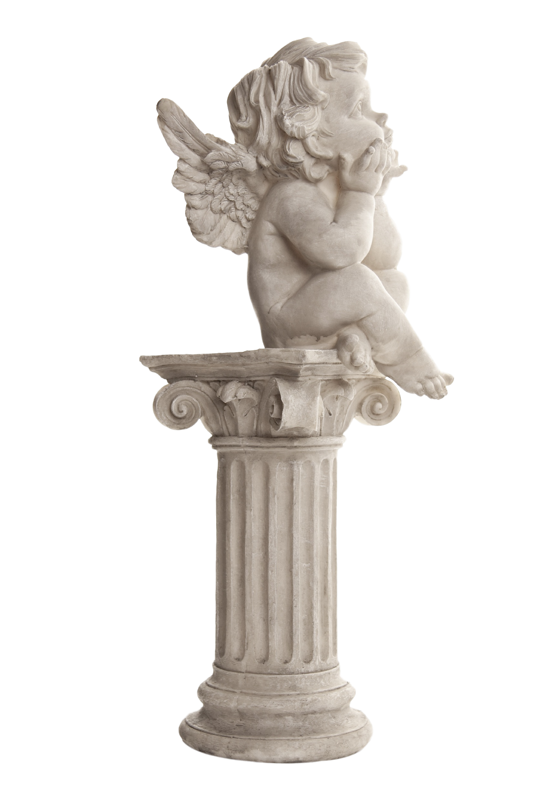
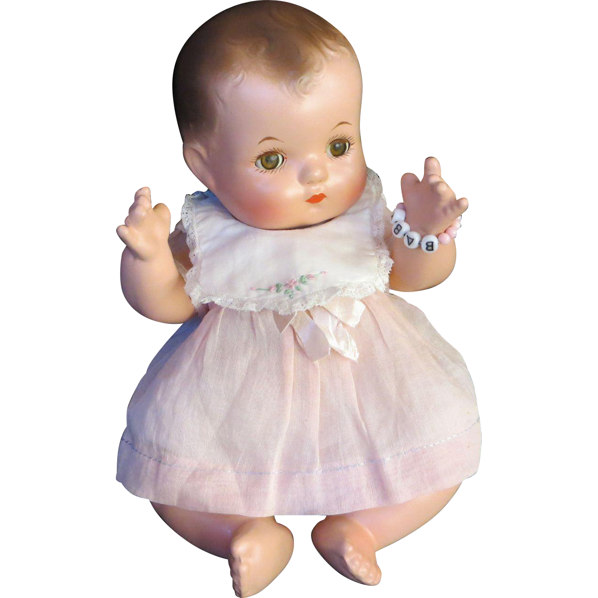

DEATH DOMAIN
The territory of Curio, the Death angel.
Mostly consists of piles of waste that the angel resides upon and constantly remakes into new objects or Materials. Due to pools of mud and wet clay everywhere, the area is unsafe for most other creatures, although thanks to Curio’s friendship with the Devil angel, lots of ceramic Toys are produced there.

DEVIL DOMAIN
The territory of the Devil Angel, commonly (and unfairly) dubbed 'Hell' by many. The place, where everything is meant to cater to one's every desire, administered by the kindest and most compassionate ruler of all. Shaped like a dollhouse, the place will surely fill any human with peaceful nostalgia and any creature with tender childlike joy! For that very reason, many mentally diseased are sent here for reformation...and many stay for utmost care!